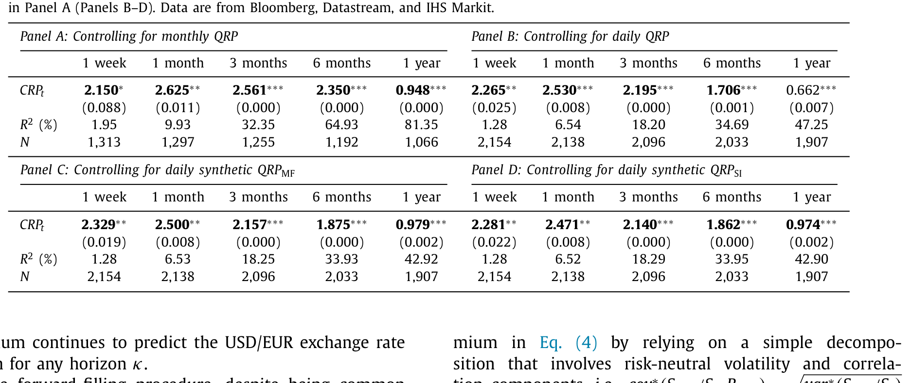
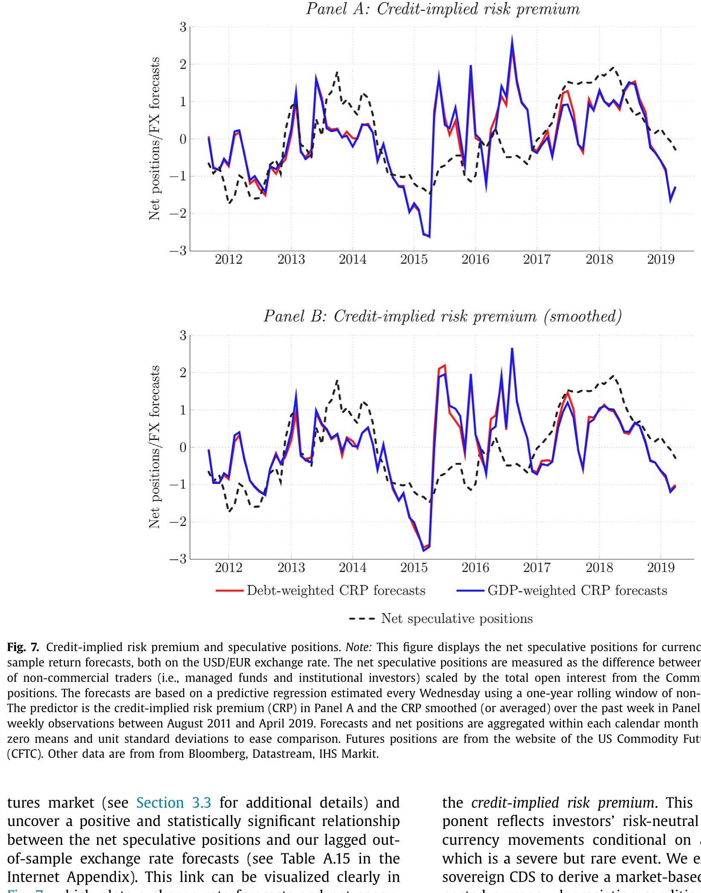
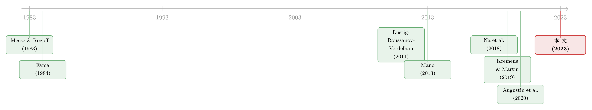

汇率藏在一张「违约保单」的价差里
本文读的是 Della Corte, Jeanneret & Patelli (2023, Journal of Financial Economics)：同一份主权信用违约互换 (CDS) 用美元和欧元两种货币报价，二者的价差里藏着「一旦违约、欧元会贬多少」的市场预期；作者把这个预期提炼成一个新的预测变量——信用隐含风险溢价 (credit-implied risk premium, CRP)——并证明它能在一周到一年的各个区间里正向预测美元-欧元汇率收益。一个标准差的 CRP，对应未来一个月年化 +7.9% 的汇率收益。
1 引言：两种风险，纠缠在一起
一个持有外国政府债券的美国投资者，其实同时扛着两件事。第一，他怕这国的货币贬值——哪怕债券本身分文不少，换回美元也缩水了；第二，他怕这国的信用恶化——债券价值本身被违约风险侵蚀。
教科书会把这两件事分开来讲。但真实世界偏偏不肯。Reinhart (2002) 翻了 1970–2002 年间 58 个国家的账，发现主权违约前后出现一次「严重货币贬值」的概率高达 84%；Mano (2013) 把样本拉到 1873–2008 年，算出货币在违约当年平均跌 17.6%、相对五年前累计跌 29.2%；Na et al. (2018) 看 70 个国家则报告，违约事件前后三年的窗口里，汇率中位数贬值 45%。文献给这对孪生现象起了个名字——「孪生 D」(Twin Ds)，即贬值 (depreciation) 与违约 (default) 几乎总是结伴而来。
于是一个很自然的推断浮出水面：如果一种货币在「违约时」会贬得特别狠，那它就格外危险，理应给持有者更高的超额收益作为补偿。
听起来顺理成章。但真正卡住所有人的，是一个测量问题：我们怎么把「违约条件下、货币会贬多少」这件还没发生的事，从市场价格里读出来？没有一个理论上站得住、又能直接观测的风险溢价度量，上面那句推断就只是一句漂亮话。
这篇论文要补的，正是这块缺口。
2 关键的一步：同一份保单，两种货币
接着，一个自然的问题是——市场上有没有哪个价格，天生就把「违约」和「贬值」绑在一起报出来？
作者盯上了主权 CDS 市场一个被忽视的细节：对同一个主体、同一期限、同一重组条款的 CDS，市场往往用不止一种货币报价。而这两种报价，保的并不是同一件事。
设想一个美国投资者。他买一份以欧元计价的西班牙 CDS，保的是「西班牙违约」这一件事；可一旦他买的是以美元计价的同一份 CDS，那么在违约真的发生、欧元同时暴跌的那一刻，赔付要折成美元交付——这份合约因此额外替他对冲了「违约时欧元贬值」的风险。
两份合约背后的违约概率是同一个。于是在无套利条件下，二者的价差只能反映一件事：投资者对「本币与违约之间关系」的预期。这个价差，市场参与者管它叫 quanto CDS。
这不是空想。欧债危机展开时，这个价差大得惊人：2012 年 1 月 2 日，西班牙的一年期 CDS 美元报价是 339 个基点（每年），而欧元报价只有 266 个基点——73 个基点的鸿沟，就是市场为「违约时欧元会贬」这件事开出的价。
为什么不直接用主权债券来估？理论上可以，但要求同一主体、同一期限、至少两种货币计价的国债同时存在——这样的债券极其罕见，尤其工业化国家偏好用本币发债。CDS 市场恰好提供了干净的、跨货币的同名报价，这正是欧元区成为完美试验场的原因。（关于货币计价本身如何被企业的销售版图塑造，可参见《你的债，说哪国话？》。）
3 一个简单的理论
然后，论文把这个直觉写成了一套可以落地的模型。它建立在 Kremens & Martin (2019) 的「汇率 quanto 理论」之上，但多挖出了一层。
第一步：资产定价的基本恒等式。 一个美国投资者把美元换成欧元、按欧元无风险利率存一期、再换回美元。记 \(S_t\) 为美元-欧元即期汇率（每欧元值多少美元，\(S_t\) 上升即欧元升值），\(R^{\\)}_{f,t}$、\(R^{AC}_{f,t}\) 分别为美元、欧元的总无风险利率，\(M_{t+1}\) 为给美元资产定价的随机贴现因子 (SDF)。预期总汇率收益满足：
$$ E_t\!\left[\frac{S_{t+1}}{S_t}\right] = \frac{R^{\$}_{f,t}}{R^{AC}_{f,t}} - R^{\$}_{f,t}\,\mathrm{cov}_t\!\left(M_{t+1}, \frac{S_{t+1}}{S_t}\right). $$
直觉很清楚：预期汇率收益 = 利差项 − 一个风险调整项（SDF 与汇率收益的协方差）。
第二步：在风险中性测度 \(E_t^{*}\) 下，协方差项消失，恒等式退化为我们熟悉的抛补利率平价 (uncovered interest parity, UIP)：
$$ E_t^{*}\!\left[\frac{S_{t+1}}{S_t}\right] = \frac{R^{\$}_{f,t}}{R^{AC}_{f,t}}. $$
UIP 说「高息货币会贬」，但它在实证上几乎从不成立——这正是 Fama (1984) 以来著名的远期溢价之谜，留下的缺口被普遍解读为时变的风险补偿。
第三步：把风险拆开。 作者让投资者持有一个以美元计价的全球组合，其总收益由两部分构成：
$$ X_{t+1} = 1 + r_{t+1} + d_{t+1}. $$
其中 \(r_{t+1}\) 是一篮子美股（如标普 500）的收益，\(d_{t+1}\) 则是一个「或有资产」的超额收益——它的命运取决于欧元区会不会违约。令 \(D\) 为违约指示变量（风险中性概率 \(Q_t\)），\(d_{t+1} = a - D b\)：平时收一份补偿 \(a\)，违约时则承受损失 \(b\)。
第四步，也是全文的轴心：把 SDF 用这个全球组合的收益替换掉，预期汇率收益便分解成三块可观测的成分加一个残差：
QRP 是 Kremens & Martin (2019) 的贡献，它捕捉的是「美股频繁但小幅波动」与汇率的关系。而本文的主角是第三项——信用隐含风险溢价 (CRP)：它捕捉的是「罕见但剧烈」的境外事件（一场主权违约）所带来的欧元贬值风险。
最后一步：把 CRP 这项展开，它有一个极漂亮的闭式：
$$ \mathrm{cov}^{*}_t\!\left(\frac{S_{t+1}}{S_t}, d_{t+1}\right) = Q_t\, b\left(E_t^{*}\!\left[\frac{S_t - S_{t+1}}{S_t}\,\Big|\,D=1\right] - E_t^{*}\!\left[\frac{S_t - S_{t+1}}{S_t}\right]\right). $$
括号里是两个「预期贬值」之差：前者是违约条件下市场预期的欧元贬值幅度，后者是 UIP 隐含的无条件贬值。两者一旦拉开，就说明投资者预期「违约时欧元会贬得比平时更狠」——这时 CRP 为正，投资者要为持有欧元索取额外的风险补偿。而这两个风险中性预期，恰恰能从美元、欧元两种 CDS 报价之差里反解出来。
理论与测量，就这样在 quanto CDS 上合龙了。
4 数据
- 核心样本：16 个欧元区成员国的主权 CDS 日度报价，同时含美元与欧元两种计价，来自
IHS Markit，区间为2010 年 8 月至2019 年 4 月。 - 对每个成员国算出日度 CRP，再按各国未偿债务加权，合成一个欧元区整体的 CRP。
- 被预测对象：美元-欧元汇率收益——这是全球最具流动性的货币对，日成交额超过
5000 亿美元（BIS, 2019）。 - 拓展样本：同时拥有本币与美元两种 CDS 报价的新兴市场（墨西哥、俄罗斯、南非、土耳其），用于面板检验。
5 主要结果：它真的预测了汇率
接着是验证。作者用合成的欧元区 CRP 去预测未来的美元-欧元汇率收益，从一周到一年各个区间逐一回归。
结论是干净的正向预测：在控制了利差（Fama, 1984）和 quanto 隐含风险溢价（Kremens & Martin, 2019）之后，CRP 仍能在任意区间正向预测汇率收益。量级上，在一个月的区间，CRP 每上升一个标准差，对应未来年化 +7.9% 的汇率收益。这个结果对一系列控制都稳健：全球外汇波动率与流动性因子（Menkhoff et al., 2012；Karnaukh et al., 2015）、组合型货币因子（Lustig et al., 2011），以及交易商的对手方信用风险。

Table 4
把样本换到新兴市场，在控制货币与时间固定效应的面板里，单国的 CRP 同样统计显著地正向预测了该国未来的汇率收益——这说明机制并不是欧元区独有的故事。
作者还逐条排除了几种「伪解释」：其一，这不是全球货币风险溢价（Lustig et al., 2011）的换皮，因为非欧元货币对上看不到这种可预测性；其二，CRP 与 QRP、与主权风险本身在经济、金融、货币的决定因素上根本不同，三者各说各话、互为补充；其三，把价差归因于交易商信用风险后，结果依旧成立；其四，用周度不重叠观测重做，排除了收益持续性带来的计量假象；其五，逐国检验发现，可预测性集中在法国、德国这类经济体量最大的国家，而非少数 CDS 不活跃的小国在驱动结果。
下图把「汇率预测值」与「违约条件下的预期贬值」放在一起，可以直观看到二者的同步关系。

Figure 7: , which plots exchange rate forecasts and net specu- pected currency depreciation conditional on sovereign de-
6 经济价值：不只是统计显著
但统计显著不等于赚得到钱。于是论文做了最后、也最有说服力的一步：沿用 Fleming et al. (2001) 的框架，让一个美国投资者在「美元债券」与「欧元债券」之间做均值-方差资产配置，每周用不重叠观测再平衡，并用 CRP 来预测汇率收益。
结果是实打实的样本外经济收益：一个风险厌恶的投资者，愿意每年付出超过 200 个基点，只为从「天真随机游走」组合切换到用 CRP 择时的组合——而且在合理的交易成本下，这份盈利依然存活。这恰好回应了 Meese & Rogoff (1983) 以来那个根深蒂固的判断：汇率近似随机游走、不可预测。本文用一个有理论根基的风险溢价度量，在短区间上把这块铁板撬开了一道缝。
7 文献脉络
把这条线索拉直来看，它的演进相当清楚。
最早的底色是悲观的：Meese & Rogoff (1983) 证明经济基本面变量在样本外预测汇率时干不过随机游走；Fama (1984) 则揭示利差与汇率的关系充满谜团（远期溢价之谜）。此后虽有 Mark (1995) 在长区间上找到一些基本面预测力，但「短区间不可预测」几乎成了共识。
接着，外汇风险溢价被组合化：Lustig, Roussanov & Verdelhan (2011) 提炼出货币市场的共同风险因子（carry、dollar），Burnside et al. (2011) 则用「比索问题」(peso problem) 解释 carry 收益——为后文「罕见但剧烈」的事件埋下伏笔。
然后，一条专攻「CDS 货币计价」的支线生长出来。Mano (2013) 第一个利用美元与本币 CDS 之差来刻画违约时的货币贬值；Du & Schreger (2016) 从主权债券的信用利差差额里估计新兴市场的预期贬值；Lando & Bang Nielsen (2018) 与 Augustin, Chernov & Song (2020) 用 quanto spread 的期限结构去理解「孪生 D」；Na et al. (2018) 则从最优违约与贬值的理论给出了机制。

而真正给本文搭好脚手架的，是 Kremens & Martin (2019)——他们把汇率预期写成汇率与一篮子美股的风险中性协方差，提出 QRP。本文站在这块基石上，多识别出一块与之并存、却跨越不同信息的成分：CRP。如果说 QRP 管的是「频繁的小冲击」，那么 CRP 管的就是「罕见的大冲击」。
（汇率的「供给—需求」分解，可参见《美元为什么强？》；货币收益与一国在贸易网络中的位置，可参见《你的货币贵不贵，要看你在贸易网络里坐第几排》。）
8 评论与延伸（Q&A + 研究方向）
(a) 几个可能的疑问
Q：CRP 和 QRP 到底差在哪？听起来都是「汇率与某种风险的协方差」。
差在「触发事件」的频率与剧烈程度。QRP 取的是汇率与一篮子美股收益的协方差，刻画的是频繁但微小的美国市场波动；CRP 取的是汇率与「违约或有资产」收益的协方差，刻画的是罕见但严重的境外冲击（主权违约）。论文实证显示二者在经济、金融、货币的决定因素上互不重叠，回归里同时放进去仍各自显著。
Q：如果样本期里压根没发生过欧元区主权违约，这个「违约条件下的贬值」是不是凭空捏造的？
这正是「比索问题」(peso problem) 的精髓（Burnside et al., 2011）。即便违约从未在样本里兑现，只要投资者相信它可能发生，这份担忧就会反映在远期 CDS 价差和未来的汇率收益里。换句话说，CRP 度量的是一种「未实现但被定价」的尾部预期，事件不发生反而是常态。
Q：美元与欧元 CDS 的价差，会不会只是交易商的信用风险或市场分割造成的？
作者专门控制了交易商的对手方信用风险，结果不变；逐国检验又发现预测力集中在法、德这类 CDS 最活跃的大国，而非流动性差的小国。这两点共同削弱了「价差源自交易摩擦」的解释。
Q：「在任意区间显著」会不会是收益持续性带来的计量假象？
作者用周度不重叠观测重做了全部回归，绕开了重叠样本导致的自相关问题，结论依旧成立。这是处理长区间汇率回归伪显著的标准做法（参见 Kilian, 1999）。
Q：200 个基点的经济价值，扣掉交易成本还剩多少？
论文明确说该盈利「在合理的交易成本下存活」。不过它用的是周度再平衡的均值-方差策略，且配置对象是流动性极高的美元/欧元债券，因此成本本就不高——这个结论对新兴市场货币能否平移，仍需谨慎。
Q：这是否意味着 UIP「修好了」？
不能这么说。本文不是修补 UIP，而是为 UIP 的偏离提供了一个有理论根基的、可观测的风险补偿来源。它说明「违约时货币会贬」这件事被市场定价，而非把整个远期溢价之谜一举解决。
(b) 几个可能的研究问题与提案
1. 把 CRP 搬到公司信用市场。
- 【经济故事】主权 CDS 有跨货币报价，那么跨境发债的大型企业、尤其是同时有美元与欧元债的发行人，其 CDS 是否也存在 quanto 价差？如果有，能否提炼出一个「企业违约条件下的汇率/利差预期」？这会把「孪生 D」从国家层面下沉到企业层面。
- 【可行性】中。IHS Markit 的企业 CDS 多数只有单一货币报价，能找到双货币报价的样本会很薄；识别上需要把企业违约风险与汇率敞口分离，难度高于主权。
2. 外资持有人结构与 CRP 的横截面。 - 【经济故事】若一国国债的外资持有比例越高，违约时被迫抛售引发的货币贬值预期是否越强、CRP 是否越大？这把「谁持有」这条线索接到了 CRP 上。 - 【可行性】中。需要 CPIS、TIC 等跨境持有数据与主权 quanto CDS 拼接；持有结构的内生性是主要识别障碍。
3. CRP 对主权债券流动性的反向预测。 - 【经济故事】既然 CRP 反映「违约时贬值」的预期，它上升时外国投资者是否会先行撤出该国国债，从而压低债券流动性？这能把信用、汇率、流动性三者串成一条因果链。 - 【可行性】高。主权债券的买卖价差、成交量数据可得，CRP 由 CDS 价差直接构造，可做面板预测回归（控制国家与时间固定效应）；难点在区分流动性下降是 CRP 的因还是果。
4. quanto 价差里的「央行可信度」成分。 - 【经济故事】欧元区的特殊之处在于成员国不能单独印钞，违约与再计价 (redenomination) 风险纠缠（De Santis, 2019）。能否把 CRP 进一步拆出一块「退出欧元区」的再计价溢价？ - 【可行性】中。需要 ISDA basis（Kremens, 2022）等合约法律差异数据；样本集中在危机期，识别窗口有限。
参考文献
- Augustin, P., Chernov, M., Song, D. (2020). Sovereign credit risk and exchange rates: Evidence from CDS quanto spreads. Journal of Financial Economics 137(1), 129–151.
- Burnside, C., Eichenbaum, M., Kleshchelski, I., Rebelo, S. (2011). Do peso problems explain the returns to the carry trade? Review of Financial Studies 24(3), 853–891.
- De Santis, R.A. (2019). Redenomination risk. Journal of Money, Credit and Banking 51(8), 2173–2206.
- Della Corte, P., Sarno, L., Schmeling, M., Wagner, C. (2022). Exchange rates and sovereign risk. Management Science, forthcoming.
- Fama, E.F. (1984). Forward and spot exchange rates. Journal of Monetary Economics 14(3), 319–338.
- Kilian, L. (1999). Exchange rates and monetary fundamentals: what do we learn from long-horizon regressions? Journal of Applied Econometrics 14(5), 491–510.
- Kremens, L. (2022). Currency redenomination risk. Journal of Financial and Quantitative Analysis, forthcoming.
- Kremens, L., Martin, I. (2019). The quanto theory of exchange rates. American Economic Review 109(3), 810–843.
- Lando, D., Bang Nielsen, A. (2018). Quanto CDS spreads. Working Paper, Copenhagen Business School.
- Lustig, H., Roussanov, N., Verdelhan, A. (2011). Common risk factors in currency markets. Review of Financial Studies 24(11), 3731–3777.
- Mano, R. (2013). Exchange rates upon sovereign default. Working Paper, International Monetary Fund.
- Mark, N.C. (1995). Exchange rates and fundamentals: evidence on long-horizon predictability. American Economic Review 85(1), 201–218.
- Meese, R.A., Rogoff, K. (1983). Empirical exchange rate models of the seventies: Do they fit out of sample? Journal of International Economics 14(1–2), 3–24.
- Menkhoff, L., Sarno, L., Schmeling, M., Schrimpf, A. (2012). Carry trades and global foreign exchange volatility. Journal of Finance 67(2), 681–718.
- Na, S., Schmitt-Grohé, S., Uribe, M., Yue, V. (2018). The twin Ds: optimal default and devaluation. American Economic Review 108(7), 1773–1819.
- Reinhart, C.M. (2002). Default, currency crises and sovereign credit ratings. World Bank Economic Review 16(2), 151–170.
评述者按：这篇论文最让我欣赏的，是它把一个老问题（汇率不可预测）和一个被忽视的市场事实（同名 CDS 的跨货币报价）焊接在一起，给出的不是又一个数据挖掘出来的预测因子，而是一个有清晰资产定价含义、且可直接从价格反解的度量。CRP 与 QRP 的「分工」——罕见大冲击 vs. 频繁小冲击——尤其干净。
我对识别的担忧有两点。其一，样本期内没有真正的欧元区违约，全部识别都依赖「比索式」的尾部预期，这使得结果天然难以用已实现事件去交叉验证，CRP 究竟是「违约贬值预期」还是「危机期的某种流动性/再计价溢价」，边界并不像论文声称的那样泾渭分明（作者控制了交易商风险，但再计价风险与之高度共线）。其二，欧元区的制度特殊性（成员国不能独立印钞）让 CRP 可能掺入退出欧元区的成分，把这套框架平移到能自主印钞的主权国家时，机制未必照搬。
后续我最想看到的，是把 CRP 接到债券流动性与外资持有人结构上——如果「违约时贬值」的预期真的会驱动外资先行撤离，那么 CRP 不只是一个汇率预测因子，更可能是一根贯穿信用、汇率、流动性的预警线。